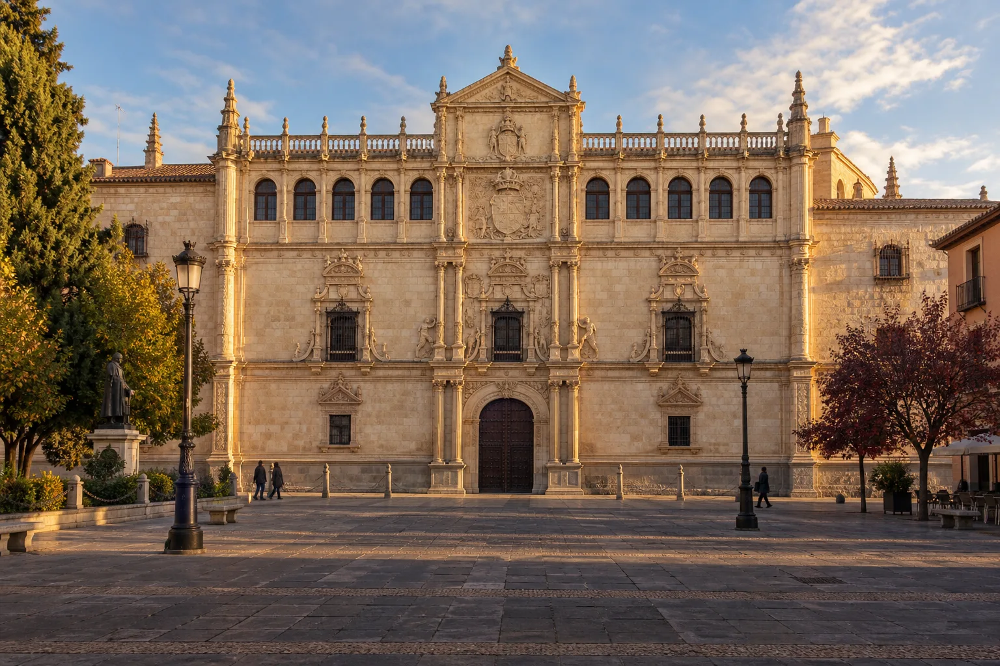

Guía urbana · Alcalá de Henares
De la Universidad
a la Puerta de Madrid
Una ruta breve por patios, soportales y memoria cervantina.
Punto 0 · Antes de empezar
Alcalá, una ciudad
hecha para aprender.
Alcalá de Henares es Patrimonio Mundial de la UNESCO desde 1998. Su universidad y su recinto histórico forman un conjunto inseparable: aquí la ciudad se organizó alrededor de colegios, patios, libros y estudiantes.
No fue la primera universidad de Europa —Boloña, París y Oxford son anteriores—. Lo excepcional es que el proyecto de Cisneros, iniciado en 1499 y desarrollado a comienzos del siglo XVI, concibiera Alcalá como una ciudad universitaria planificada: colegios, aulas, hospital, imprenta y servicios integrados en el tejido urbano.
El recorrido
Ocho lugares,
una línea hacia el oeste.
Empieza frente a la fachada de San Ildefonso y termina junto a la muralla. Sigue el orden de las paradas para no volver sobre tus pasos.